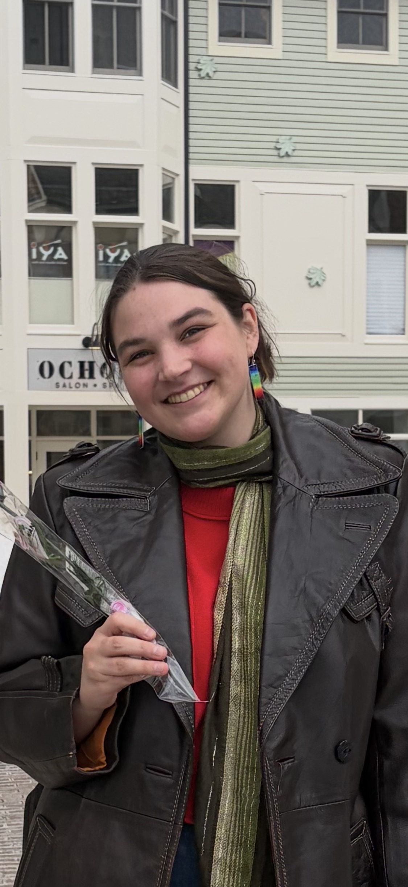
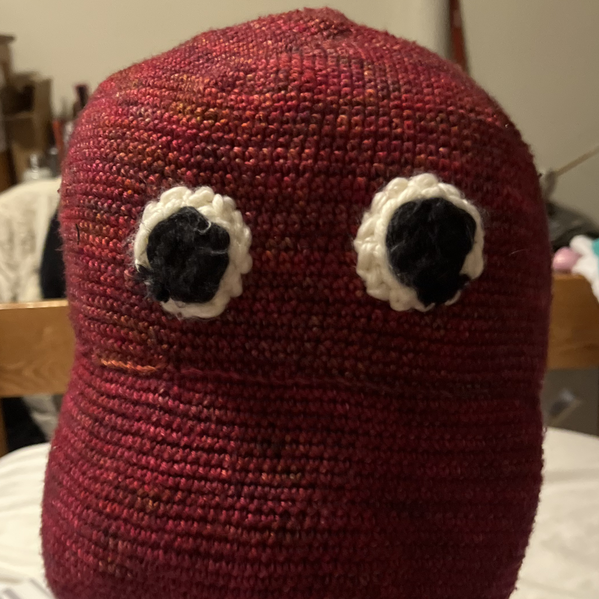
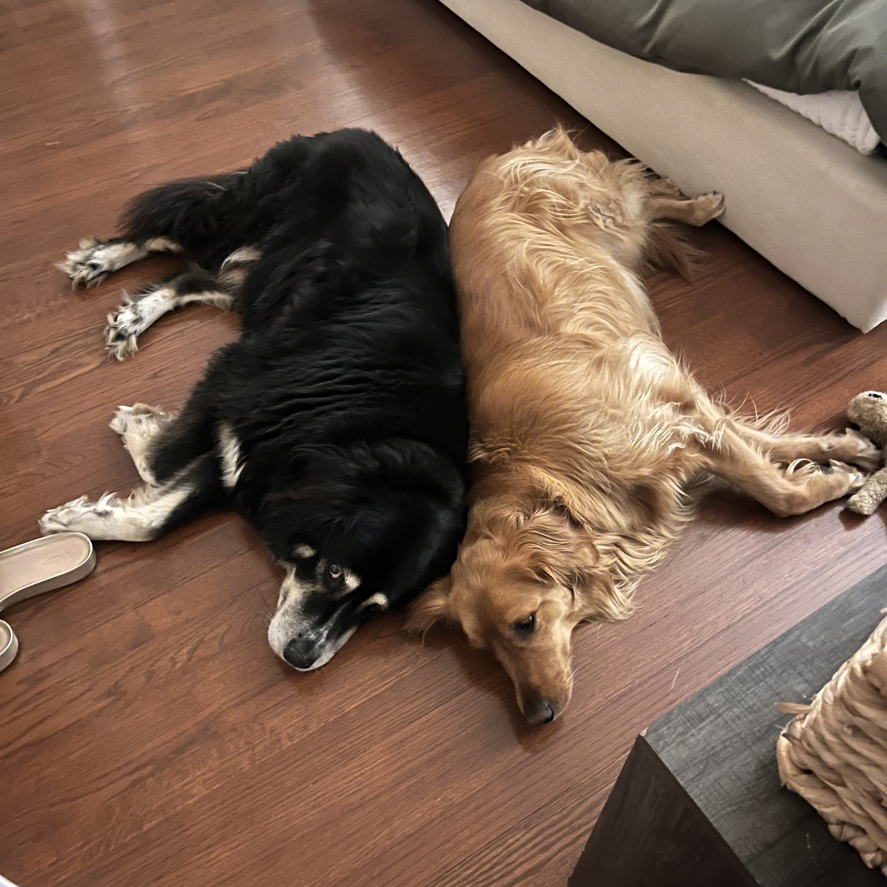

This is Me!

When I started my undergraduate education in 2023, I had no idea what I wanted to do. Originally, I thought I'd end up majoring in the humanities or perhaps the arts. However, after taking an introductory astronomy class in the spring of my first year, I fell head-over-heels in love with astrophysics. Now, I am an undergraduate researcher, an astronomy TA, and an Astronomy and Physics double major who plans to attend graduate school and, one day, get a PhD. I am deeply fascinated in many facets of astrophysics, but I find myself especially drawn towards the study of some of the Universe's most extreme objects, neutron stars, as well as the study of stellar evolutionary pathways and how they are impacted by being in multiple star systems.

Outside of astronomy, I am an avid crocheter, an enjoyer of fantasy novels (my favorite is Priory of the Orange Tree by Samantha Shannon , I highly reccomend reading it if you have not already), an animal lover, and a former harpist. I once crocheted a large brown dwarf for a creative project in an astronomy class, though the final result was much more peanut shaped than originally intended (image on the right). I played harp for almost a decade, though, due to the demands of college, I've had to step back from the instrument for the time being; however, I do hope that I will be able to go back to harp one day in the future.

I have two dogs, Budz (left) and Pheobe (right), that I adore. Budz is a big, fluffy teddy bear, but he can be hilariously stubbon once he's set his mind to something. Pheobe is a total goofball who loves to cuddle, play, and run around. Despite growing up with exclusively dogs, I do hope to get a cat as well one day! I've also had pet frogs, toads, and chickens, though they have since passed away or been rehomed.